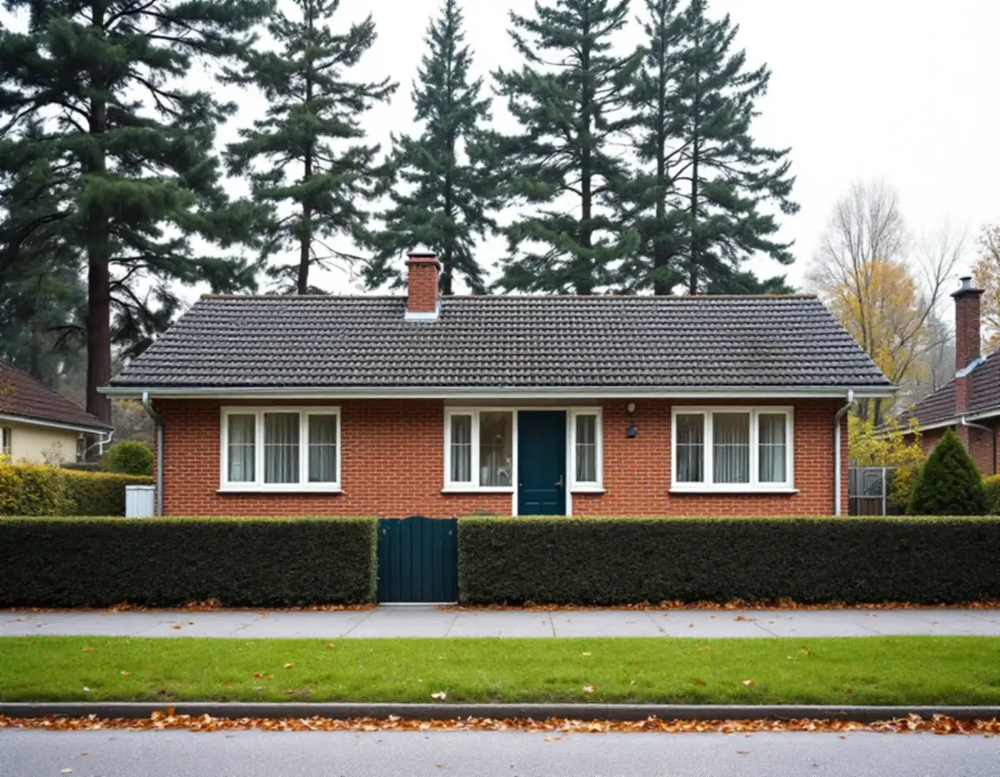
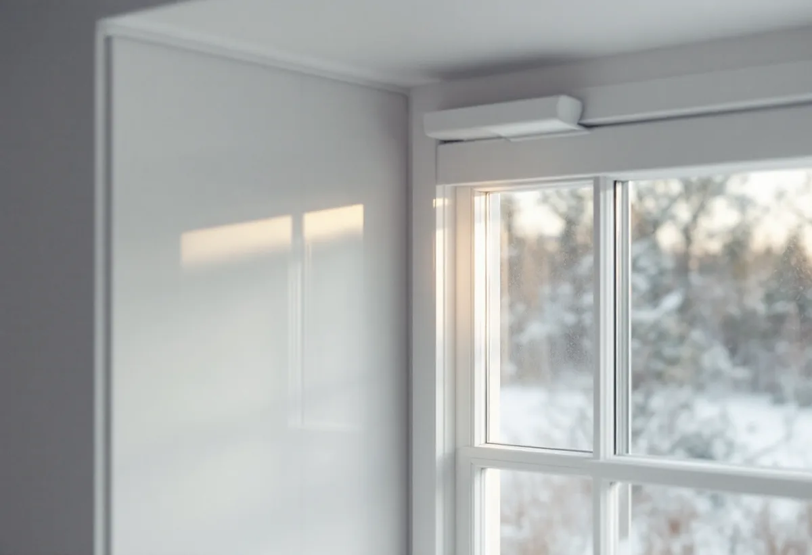

Besök
Vi går igenom fönstren, ser vilka rum som vetter mot trafiken och mäter upp varje fönster.

I Sollentuna är det ofta trafiken som får villaägare att se över fönstren.
Beskriv jobbet kort.
Något blev fel. Kontrollera uppgifterna eller ring 08 12 410 276.
Vi tittar på jobbet på plats innan du får offert.
Du ser vad som ingår och vad det kostar.
Vi drar av ROT direkt och sköter ansökan.
Geal Entreprenad AB, Bromma. Org.nr 559303-7566.

Kommunen konstaterar att en stor del av bullret kommer från E4, järnvägen och flygtrafiken, och för hus vid kommunala gator finns ett bidrag för bullerdämpning. Geal Entreprenad AB byter och renoverar fönster i hela Sollentuna, med gratis platsbesök och skriftligt kostnadsförslag.
Kommunens regler för bidrag till bulleråtgärder beskriver samhällsbuller som den störning som berör flest människor i Stockholms län. En stor del av Sollentunas bullerproblem kommer enligt kommunen från statens anläggningar: E4, järnvägen och flygrörelserna till och från Arlanda. Dessutom finns flera genomfartsleder, både statliga och kommunala, med betydande vägtrafikbuller.
Kommunen skriver också att skärmar och vallar är väl utbyggda i Sollentuna och att buller ständigt diskuteras i detaljplanearbetet. För den som redan bor nära en trafikled är det ändå fönstren som avgör hur mycket som hörs inomhus, eftersom de är fasadens svagaste del även mot ljud.
Boverkets energiguide påpekar att olika glas och glaskombinationer ger olika mycket bullerdämpning, solavskärmning och dagsljusinsläpp. Ett fönster mot en trafikerad gata kan därför behöva ett annat glas än fönstren mot trädgården.
Den som störs av buller från kommunala vägar kan söka bidrag hos kommunen. Bidraget kan gälla komplettering av befintliga fönster med en tillsatsruta, byte av fönster eller installation och byte av friskluftsdon. Det kan ges för rum mot och vinkelrätt mot den bullerutsatta sidan, och fönsterytan får vara högst 30 procent av den berörda fasadytan.
Villkoren är att bullret överstiger 55 dBA ekvivalent nivå enligt kommunens bullerkartläggning, att huset är ett en- eller tvåbostadshus som ägaren bor i permanent, att det är byggt före 1997 och att fastigheten inte fått bullerbidrag tidigare. För buller från E4 och järnvägen hänvisar kommunen till Trafikverket, och för flygbuller till Luftfartsverket eller Swedavia.
Bidraget ska sökas och beviljas innan arbetet börjar, och det betalas inte ut i efterhand. Ansökningar tas emot hela året men behandlas i april och maj, ett avtal tecknas innan arbetet startar och åtgärderna ska vara klara och redovisade inom ett år från beslutet. Planerar du att byta fönster mot en kommunal gata är det därför värt att kontrollera bidraget innan beställningen görs.
En tillsatsruta på insidan av ett befintligt fönster ger en extra glasning utan att fasaden ändras. Boverket beskriver samma princip för energin: en extra båge med energiglas eller en tvåglaskassett på insidan, förutsatt att bågen klarar tyngden och att det finns djup för kompletteringen.
Byts fönstret helt behöver anslutningen mot väggen vara tät, eftersom ljud tar sig igenom springor lika lätt som luft. Boverket påpekar att drevningen och isoleringen mellan karm och vägg ska göras fackmässigt och gärna fotodokumenteras. Ett tätare hus behöver samtidigt tilluft, och ett ljuddämpande friskluftsdon är då en del av lösningen snarare än ett tillägg.
När fönstren och huset blir tätare ändras också ventilationen. I hus med självdrag kan läckage kring de gamla fönstren ha varit en del av tilluften. Ska vinden isoleras samtidigt, eller taket ses över mot vägsidan, se takrenovering i Sollentuna.
Sollentuna kommun räknar att ändra fönster och dörrar som en fasadändring, och för en- och tvåbostadshus krävs det oftast inget bygglov. I radhus, kedjehus och andra sammanbyggda småhus gäller olika möjligheter beroende på hur bebyggelsen är utformad, och kommunen ber dig då kontakta kontaktcenter. Påverkar ändringen husets bärande stomme kan en konstruktionsritning behövas.
För byggnader och områden som är kulturhistoriskt särskilt värdefulla går de lovbefriade åtgärderna inte att använda. I kommunens karta med gällande detaljplaner finns ett lager som visar områdena i kulturmiljöplanen, men en byggnad kan vara värdefull även om den inte syns där. Vill du ha ett beslut på att bytet uppfyller kraven kan du söka frivilligt bygglov. Läs mer om fasaden runt fönstren under fasadrenovering i Sollentuna.
Vi går igenom fönstren, ser vilka rum som vetter mot trafiken och mäter upp varje fönster.
Vi ser om huset kan omfattas av bullerbidraget och om kulturmiljöplanen berör fastigheten.
Glas och åtgärd väljs per fasad, och allt redovisas i ett skriftligt kostnadsförslag.
Friskluftsdon eller spaltventiler planeras så att ventilationen fungerar i det tätare huset.
Fönster eller tillsatsrutor monteras med tät drevning, och anslutningarna fotograferas.
Vi går igenom resultatet och lämnar underlag som kan behövas för kvitton och bidrag.
Skatteverket räknar det som rotarbete i ett småhus att reparera eller byta ut fönster och att montera bullerglas och isolerglas. Avdraget är 30 procent av arbetskostnaden, högst 50 000 kr per person och år och högst 75 000 kr tillsammans med rutavdrag. Material och resor ger inget avdrag.
Du behöver äga huset medan arbetet görs och bo i det. Geal gör avdraget direkt på fakturan.
Hur många fönster som vetter mot trafiken, om det räcker med tillsatsrutor eller om fönstren ska bytas, vilket glas som krävs för bullret, hur många friskluftsdon som behövs och hur mycket foder och bleck som görs om. Efter ett kostnadsfritt platsbesök får du ett skriftligt kostnadsförslag.
Byta eller renovera fönster.
Fönsterbyte i Stockholm →Takbyte, takbesiktning och plåtarbeten.
Takläggare i Sollentuna →Norrviken, Tureberg och Edsberg.
Takrenovering i Sollentuna →Radhus, villa och en extra bostad.
Attefallshus i Sollentuna →Tillbyggnad, tomtdelning och lov.
Byggföretag i Sollentuna →Ny kulör och lov i villastaden.
Fasadmålning i Sollentuna →Villastad, radhus och ventilationen.
Badrumsrenovering i Sollentuna →Villor och radhus i Sollentuna.
Fasadrenovering i Sollentuna →Täta gamla fönster med ventilationen i åtanke.
Fönsterrenovering i Sollentuna →Radhus i Sjöberg och villor nära stationerna.
Golvläggare i Sollentuna →Massivt trä eller lamell – vad går att slipa.
Golvslipning i Sollentuna →Villastad och radhuslängor.
Köksrenovering i Sollentuna →Villor och radhus i Sollentuna.
Målare i Sollentuna →Radhusplåt, bleck och rännor i Sollentuna.
Plåtslagare i Sollentuna →Altaner, uterum och bryggor.
Snickare i Sollentuna →Ansökan, solceller och radhus.
Takbyte i Sollentuna →Ny tapet efter prov av väggen.
Tapetsering i Sollentuna →På höjden, nya byggregler och ritningar.
Tillbyggnad i Sollentuna →Radon med i planen för hela huset.
Totalrenovering i Sollentuna →Eller ring 08 12 410 276, mån–fre 08–17.
Beskriv jobbet kort.
Något blev fel. Kontrollera uppgifterna eller ring 08 12 410 276.